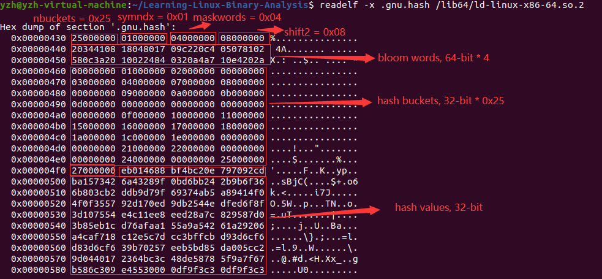
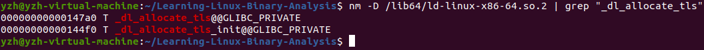

gnu hash notes
GNU Hash notes
Linux系统中，在ELF文件的全局偏移表(Global Offset Table, GOT)中的第1个条目用于存放该文件动态段(DT_DYNAMIC)的地址，第2个条目用于存放link_map的地址，第3个条目用于存放链接器(ld.so)的地址，准确的说应该是动态链接器_dl_runtime_resolve()函数的地址。
在进行动态库注入实验时，要使用dlopen()函数在运行时加载一个共享目标，但是一般的宿主程序中都没有调用dlopen()函数，因此也就没有链接libdl共享库，所以无法直接使用dlopen()函数，但是可以使用位于 libc.so 中的__libc_dlopen_mode() 函数，该函数的使用方法和dlopen()函数基本是一致的。所以现在的问题是需要得到位于 libc.so 中的 __libc_dlopen_mode() 函数的地址。
通常有两种方法得到该函数的地址。
第一种方法是直接读取进程中 libc.so 对应的地址空间中的内容，然后可以发现这些内容可以使用ELF的格式进行解析。那么就可以找到 libc.so 位于进程中的ELF文件头、程序头表，进而得到 libc.so 的动态段的地址，然后得到动态符号表(.dynsym)、动态字符表(.dynstr)，然后查询符号表获得__libc_dlopen_mode() 函数的地址。这种方法需要解决的一个问题是如何从目标进程的动态段中的信息确定符号表的条目数，因为进程运行时是不会将节头表加载到内存中的，所以无法直接获取到符号表的条目数。
对于这个问题，注意到动态符号表(.dynsym)和动态字符表(.dynstr)在内存是邻接着的，这两个表的地址都能够在动态段中找到，所以动态字符表的地址减去动态符号表的地址就是动态符号表的大小，然后再除以sizeof(ElfW_Sym) 就能得到动态符号表的条目数。
这种比较容易实现，但是在有些 libc 版本中能够实现，但是在有些 libc 版本中却无法搜索到 __libc_dlopen_mode() 这个符号。
所以通常会采用另一种更加可靠的方法，使用link_map进行查找，而具体的符号查找方法需要使用到GNU hash相关的知识，这篇文章将会介绍如何使用GNU hash进行符号查找。
首先介绍一下link_map结构：
1 | |
正如前面提到过的，在ELF文件的GOT中的第二个条目会用于存放link_map结构的地址，用于标示这个ELF文件所加载的共享目标文件，链接器根据这个结构进行符号解析工作。
上面的这个结构是一个链表结构，所以能够根据GOT中的第二个条目找到ELF文件所加载的所有共享目标。使用ldd命令也能够看到ELF文件所依赖的所有共享目标，注意到链接器实际上也是一个共享目标文件，所以能够在ldd的输出中看到链接器 ld.so。
Hash function
GNU hash函数使用的是 DJB(Daniel J Bernstein) 哈希算法，算法的代码如下：
1 | |
上面的代码将接受一个字符串作为参数，然后计算该字符串的DJB哈希值。
GNU hash 节
使用GNU hash，动态符号表将会被划分为两个不同的部分，第一部分是能够从hash表中省略的符号，GNU hash并不会对这一部分施加特定的顺序；第二部分就是能够通过 GNU hash查找到的符号，对于这部分符号，GNU hash将会按照 (hash % nbuckets) 值递增排序，hash值使用上面的方法进行计算，而nbuckets就是哈希桶的数量，哈希桶的数量在GNU hash节中保存。因此位于同一个哈希链中的符号在内存中也是邻接的，提高了空间局部性。
GNU hash节由下面4个不同的部分组成：
- header
- hash buckets
- hash chains
- 布隆过滤器(bloom filter)
其中header, hash buckets, hash chains都是32-bit的，而布隆过滤器会根据ELFCLASS的不同而有不用的长度，也就是说在ELFCLASS32的ELF文件中布隆过滤器是32-bit的，而在ELFCLASS64的ELF文件中布隆过滤器是64-bit的。所以ELFCLASS32的ELF文件的.gnu.hash在节头表对应条目中的sh_entsize被设为4，而ELFCLASS64的ELF文件的.gnu.hash节的条目长度是不统一的，因此sh_entsize被设为0。
布隆过滤器
这里对布隆过滤器进行一个简单的介绍，**布隆过滤器的主要作用是为了快速过滤掉无法在共享目标中找到的符号，从而避免昂贵的符号查找代价。**通常，进程中只有一个对象包含给定符号，跳过所有其他对象的散列操作可以大大加快符号查找速度。
布隆过滤器是概率性的算法，可能会出现假阳性的判断，也就是说本来不存在于共享目标中的符号可能经过布隆过滤器的判断会认为这个符号在共享目标中，但是不会出现假阴性的判断，也就是说布隆过滤器不会将本来属于共享目标的符号判断为不属于共享目标。
换句话说，布隆过滤可能会出现误判，但是不会拒绝存在于共享目标中的符号。
布隆过滤器由掩码字(maskwords)组成，可以是32bit或者64bit，由ELF文件的类型所决定，掩码字的值是2的整数次幂。GNU hash中使用 k = 2 的布隆过滤器，也就是说需要进行两次独立的哈希计算来查找符号。
根据布隆过滤器中的相关文献，对于较大的 k 值，设计 k 个不同的独立散列函数是困难的。但是对于一些输出比较宽的哈希函数，输出的哈希值的比特段(bit-fields)之间应该几乎没有相关性，所以对于这样的哈希函数，可以通过将其输出哈希值的不同比特段进行分割来得到多个不同的哈希值。
而GNU hash所使用的哈希函数就是具有这样特点的哈希函数，因此，可以使用下面的方法生成布隆过滤器所需要的不同哈希值：
1 | |
链接编辑器(link editor) 会先确定使用多少个掩码字(maskwords)以及上面计算过程中右移的量(shift2)，使用的掩码字越多，.gnu.hash节就会越大，但是布隆过滤器出现假阳性的概率就会越低。而右移量的取值就是哈希表的条目数(dynsymcount - symndx, symndx is the index of 1st dynsym in gnu hash)取2的对数，并且有一个最小值，对于ELFCLASS32为5，对于ELFCLASS64为6。这些值都能够在.gnu.hash节中找到。
为每一个哈希值设置一个比特，除法运算取高位，取模运算取低位：
1 | |
其中 C 为掩码字的大小，以位为单位，也就是对于ELFCLASS32，C = 32；对于ELFCLASS64，C = 64，而maskwords就是布隆过滤器中使用的掩码字的个数，这个数必须是2的整数次幂。
构建布隆过滤器时填充相应的位：
1 | |
因此使用布隆过滤器进行判断时，进行下面这样的测试：
1 | |
不过在GNU hash中，使用布隆过滤器的一个变体，只使用布隆过滤器中的一个掩码字：
1 | |
由哈希值所确定的两个比特则用下面的方法计算，实际上还是没变：
1 | |
然后构建布隆过滤器时填充相应的位，这里只填充一个位：
1 | |
所以在使用布隆过滤器判断共享目标中是否存在这个符号时，进行下面这样的测试：
1 | |
之所以GNU hash中采用的布隆过滤器只使用一个掩码字，是因为GNU hash的开发者经过测试后发现使用一个掩码字仍然能够保持不错的假阳性比率，并且对缓存也更加友好。
哈希桶
在.gnu.hash节的布局中，位于布隆过滤器之后就是哈希桶值。哈希桶是一个数组，数组元素是32比特字，数组中的每个元素都包含动态符号表中某个符号的索引的低位：
1 | |
哈希桶存放着对应符号在动态符号表中的索引值，如果哈希表中没有给定值 N 的符号，则哈希桶元素将包含索引 0。由于动态符号表的索引 0 是保留值，因此该索引不会出现在有效符号中，因此是非歧义的。
另外，因为动态符号表中的符号是按照哈希值进行排序的，因此 dynsym[buckets[N] + symndx] 所对应的符号就是满足哈希条件的第一个符号。
哈希值
在.gnu.hash节中的最后一部分用于存储32-bit的字，也就是动态符号的哈希值，动态符号表中每一个可以使用哈希表查找的符号对有一个对应的哈希值，这些哈希值的前31位直接使用对应符号的哈希值的前31位，而最后一位预留为一个终止位。如果该符号是哈希链中的最后一个符号，那么该符号对应的哈希值的最低位就设为1。
使用GNU hash查找符号
下面将会通过一个实例展示如何通过GNU Hash查找共享目标中的符号。
首先需要获取到下面的数据：
nbuckets: 哈希桶的数量
symndx: 第一个能够使用hash查找的符号在符号表中的索引
maskwords: 布隆过滤器中使用的掩码字的个数
shift_2: 计算第二个哈希值的右移位数
Bloom word *bloom: 布隆过滤器使用的掩码字数组
Word *buckets: 哈希桶数组
Word *hashval: 哈希值数组
这些数据都存储在目标文件的.gnu.hash节中，可惜 readelf 或者 objdump 工具都无法直接给出上面的这些数据。根据上面所引用的这篇文章来看，ELF文件的.gnu.hash节的布局应该如下所示：
- Header:
- nbuckets
- symndx
- maskwords
- shift2
- Bloom Filter: 也就是布隆过滤器所使用的掩码字数组
- Hash Buckets: 哈希桶数组
- Hash values: 哈希值数组
这里以ld.so为例，通过 readelf -x 得到.gnu.hash节的内容如下：

*注意，使用readelf -x 得到的hex dump内容是以小端排序的，也就是以字节为单位从左到右是低位到高位的。
在下面的实验中，将会在ld.so中查找符号_dl_allocate_tls符号。
首先读取ld.so的.gnu.hash节的头部信息如下：
nbuckets = 0x25, symndx = 0x1, maskwords = 0x04, shift2 = 0x08.
然后计算符号_dl_open的两个哈希值：
1 | |
两个哈希值分别为：“0x24bbd60a”, “0x24bbd6”。
然后计算需要使用哪个布隆掩码字：
1 | |
得到的结果是使用第0x0个布隆掩码字，从ld.so的.gnu.hash节中找到第0x0个布隆掩码字的取值为"0x1780041808413420"。
1 | |
结果是通过了布隆过滤器。
然后找到哈希值所在的哈希桶：
1 | |
得到的结果是0x5，查看哈希桶buckets[0x05]中的内容，从上图可以看到这个哈希桶中的内容为0x4。也就是符号表dynsym[0x4]对应的符号就是属于该哈希桶的第一个符号。
然后下一步就是从哈希链中找到对应的符号，哈希链位于.gnu.hash节中的最后一部分，这部分内容保存中动态符号表中每一个可以通过哈希查找的符号的哈希值的前31位。哈希链中的哈希值的顺序与符号表中的顺序是对应的，即符号表 ndx 索引处的符号的哈希值在哈希链中的下标为 ndx - symndx。
因此，将符号表下标初始化为0x04，哈希链下标初始化为 0x04 - symndx = 0x03，然后比对哈希值已经符号表条目的st_name字段，判断是否是我们要找的符号。
1 | |
得到的符号表条目中的 st_value 字段取值为 “0x147a0”，使用nm来验证这一结果：

可以看到能够正确地获取到dl_allocate_tls符号对应的符号表条目。